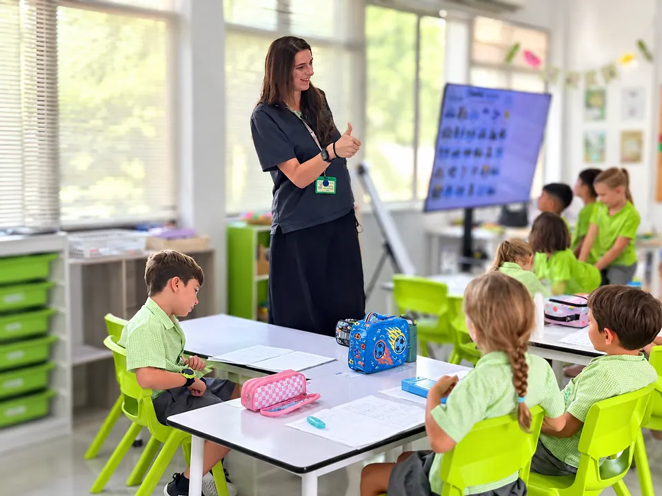
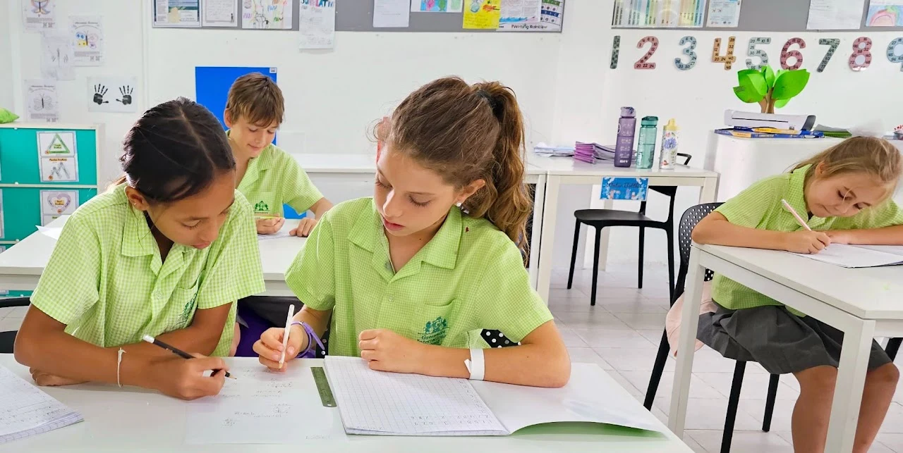

Primary
Progressive, inclusive learning through Years 1-6, with an increasing Cambridge Primary focus across the curriculum.
Building strong foundations for future learning
Primary develops knowledge, skills, confidence and independence across a broad curriculum. Greenacre's approach combines internationally recognised programmes with elements of the UK curriculum.
Teaching supports academic progression while recognising the different needs of learners. Students are encouraged to think, communicate, collaborate and reflect on their learning.

Developing the whole child
Greenacre is passionate about helping every child get the most from their education and develop as a lifelong learner. Primary combines internationally recognised learning with elements of the UK curriculum, adapted to Greenacre's setting in Thailand and its environmental vision.

Challenge, support and reflection
Assessment is used to improve learning, not simply to measure it. Evidence from lessons and recognised Cambridge assessment approaches helps teachers understand progress, plan next steps and provide appropriate support and challenge.
Practical activities, environmental learning, trips and school shows help children discover interests, build confidence and take an active part in school life. Parent meetings give families opportunities to discuss their child's progress and how to support learning at home.
Primary leads into Cambridge International learning in Years 7-9 and then Cambridge IGCSE in Years 10-11. Explore Secondary →
English as an Additional Language
Greenacre is a multilingual international community. Students learning English as an additional language are supported to develop the language and subject-specific vocabulary they need to participate confidently in the curriculum. Teaching is adapted through appropriate scaffolding and differentiation while maintaining high expectations for every learner.
Further details about EAL support and applicable charges can be found in the 2026/27 fee schedule.